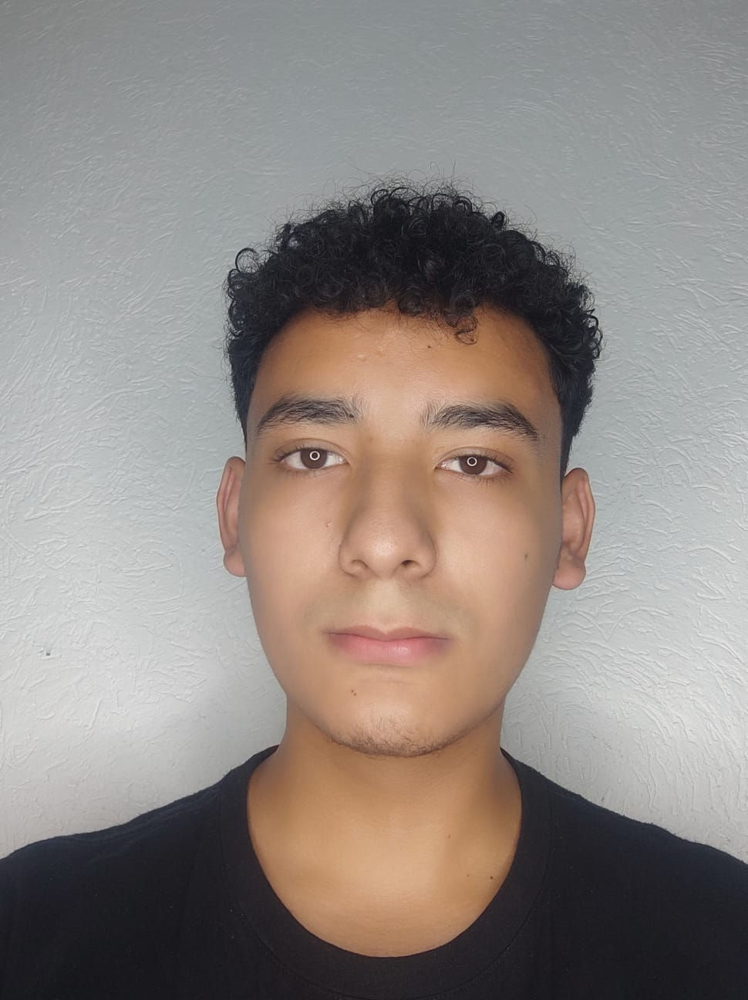

Cristian Josue Lona Avalos

Summary
Ingeniero en ciecncias computacionales graduado en la universidad de
guadalajara. Recien salido con experiencia de 2 años por parte de
general electric y candidato a un trabajo en google con muy buenas
especificaciones.
Education
2009 - 2015 | Concepcion Becerra de Celis
2015 - 2018 | Secundaria #51
2018 - 2021 | Preparatoria #6
2022 - 2027 | CUCEI
Experience
2027 - 2028 | General Electric - Guadalajara
Contact Me
Tel: +523329714097
Email: Cristian.lona4288@alumnos.udg.mx
Address: Tlaquepaque, jalisco
Languages
- Spanish Native language
- English
- Speaking: ||||| |25%
- Reading: ||||||||||||||| |80%
- Writing; ||||||||||||||| |80%